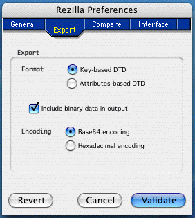

Top | Prev | Next
Preferences
Rezilla allows you to set various preferences. The preferences can be
accessed via the Preferences command in the application's menu or with
the Command-, keyboard shortcut (hit the colon key while holding the
command key down). This brings up a multipage dialog containing several
panels whose contents are described in the following sections:
- the General panel
- the Export panel
- the Compare panel
- the Interface panel
- the Templates panel
- the Editors panel
- the Misc panel

The preferences are written on disk in the user's preferences file only
when the application quits. They are stored in a file named
net.sourceforge.rezilla.plist located in the user's Preferences folder.